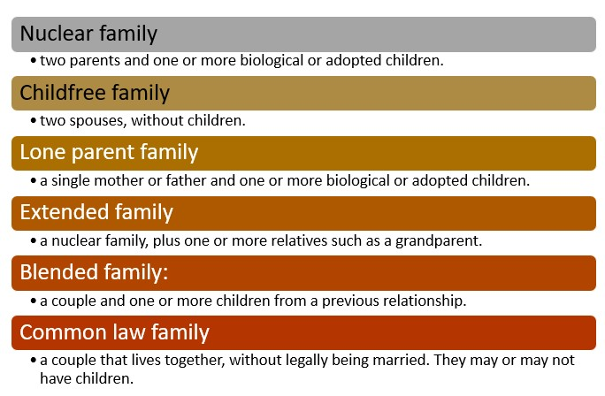

Canada
Canadians are diverse. Each person has a unique story. Therefore, to understand Canadian people and their families, it is important to appreciate the history and nature of Canada itself. So much of who we are is influenced by our identity as a Canadian, as well by as our experiences in Canada.
Take a look at the following video clips that highlight events and experiences throughout Canadian history.
The following are four examples of Heritage Minutes videos from Historica Canada that describe the experiences of Canadians and show how these experiences have helped to shape life in Canada.
You may also wish to search for additional Heritage Minutes videos online.
Heritage Minutes:
What is a Family?
While most societies accept that families are important, “what a family is” does not have the same definition for everyone. Because we are so culturally diverse, there are many different meanings of family in Canada.
According to some Indigenous persons, a family is a social network of many related people, or what is referred to as a kinship group.
|
Did You Know?
|
Types of Families

Callout
Families: Census Data
Census data on families provides a comprehensive overview of societal structures and evolving dynamics. This data sheds light on trends in marriage, household composition, and diverse family forms, including nuclear and extended families. Additionally, it reveals socio-economic factors impacting families, such as income disparities and educational attainment. Valuable for policymakers and researchers, this information informs evidence-based decisions, helping to address social inequalities and adapt support systems to the diverse needs of families.
Families: Then and Now
Take a look at the following articles to identify trends in Canadian census data over 50 years.
Now visit the Canadian census website for the most current census data on families today.
Families in the Census
The Evolution of Family: Social, Economic and Legislative Changes
The evolution of the family is a multifaceted narrative shaped by a confluence of social, economic, and legislative changes over time. Societal shifts, influenced by cultural transformations, have redefined traditional family structures, giving rise to diverse familial arrangements.
Economic factors, such as industrialization and globalization, have altered roles within families, impacting dynamics related to work, income, and household responsibilities. Legislative changes, including shifts in marriage and divorce laws, have played a pivotal role in shaping the legal framework around family life.
Exploring this evolution provides insights into how societal norms, economic forces, and legal considerations interact to shape the contemporary family landscape. It prompts examination of gender roles, caregiving responsibilities, and the impact of policies on family well-being. By understanding these interconnected influences, we can better navigate the complexities of modern family life and inform policies that reflect the diverse needs and structures of families in today's ever-changing social and economic landscape.
Functions of a Family
In most societies, family is an important social institution. Like all social institutions, they impact the arrangement and behavior of members of society.
This learning object shows a list of the functions of a family that are common in Canadian families. See if you can match the function of the family with an activity that families can perform.
Factors Impacting the Functioning of Families
|
Throughout history, there have been several factors that have influenced and continue to impact family circumstances, such as time together, living arrangements, family roles, family values, and family behavior. The functioning of families is influenced by a myriad of interconnected factors that shape their dynamics and overall well-being. Social factors, such as cultural norms, societal expectations, and community influences, play a pivotal role in defining family structures and roles within them. |
|
Economic considerations, including income levels, employment opportunities, and financial stability, significantly impact a family's ability to meet its basic needs and pursue its aspirations. Educational opportunities and access to resources also contribute to the functioning of families, influencing the well-being and development of family members. Additionally, individual factors such as mental and physical health, communication styles, and interpersonal relationships within the family unit contribute to its overall functionality. |
| Moreover, external pressures, such as technological advancements and changing demographics, can introduce new challenges or opportunities for families. Understanding these multifaceted factors is crucial for developing holistic strategies and support systems that empower families to navigate the complexities of contemporary life while fostering resilience and cohesion within the family unit. |
True or False Activity
True or False
True or False
True or False
True or False
True or False
True or False
True or False
True or False
True or False
True or False